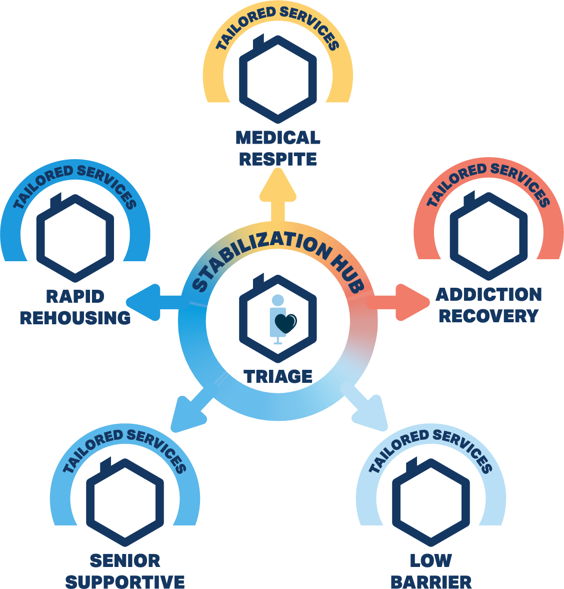

Front-door access
Low-barrier access, basic needs, and immediate stabilization.
Our nonprofit is designed for street-level homelessness: immediate help, integrated care, and a clearer path forward.
Low-barrier access, basic needs, and immediate stabilization.
Care paths designed into the shelter model for different needs.
One connected workflow from outreach to housing placement.
People living unsheltered need immediate, on-site access to care rather than referral-only pathways.
Behavioral health and substance use treatment are more effective when they are co-located and continuous.
Shelter environments can re-trigger trauma and weaken engagement.
Staff experience secondary trauma and need safer, more sustainable environments and workflows.
Instead of separating shelter, healthcare, recovery support, and housing planning, EDH brings them together and keeps people moving toward the right next step.
24/7 access, basic needs, and immediate stabilization without preconditions.
Medical, behavioral health, and substance use support are part of the core response.
Support people across a full continuum instead of forcing one fixed path.
Design the environment and the workflow to support both clients and staff.
Use triage and coordinated planning to connect people to the right next step sooner..
Street-level homelessness calls for immediate support, not a chain of referrals.
The model starts with one stabilization hub for assessment and triage, then routes each person into the shelter or housing path that best fits their needs.
A scattered-site housing pathway for people who can regain stability with coordinated transition support.
A senior-focused shelter setting with supportive and palliative care capacity for older adults with higher daily needs.
A shelter setting for people who need a safer place to recover while receiving coordinated medical support.

A recovery-oriented shelter path with substance use and behavioral health support built in.
Reduced entry requirements that keep shelter access immediate, practical, and welcoming.
Trauma-informed design is not decoration. The physical environment can either add stress or support healing, regulation, and trust.
People need choices around privacy, noise, and social connection.
The setting should reflect community, culture, and personal dignity.
Staff support is part of care quality, not an extra.
Spaces and services should feel respectful, safe, and genuinely welcoming.
Street-level homelessness calls for immediate support, not a chain of referrals.
Shelter, healthcare, behavioral health, and housing pathways work better together.
The model should work for people most affected by poverty, trauma, and exclusion.
The model depends on coordinated local partnerships across care, housing, recovery, and workforce systems.
EDH is in startup planning and partnership development. We are looking for aligned healthcare, behavioral health, housing, and community partners.
Copyright © Everyone Deserves Housing.